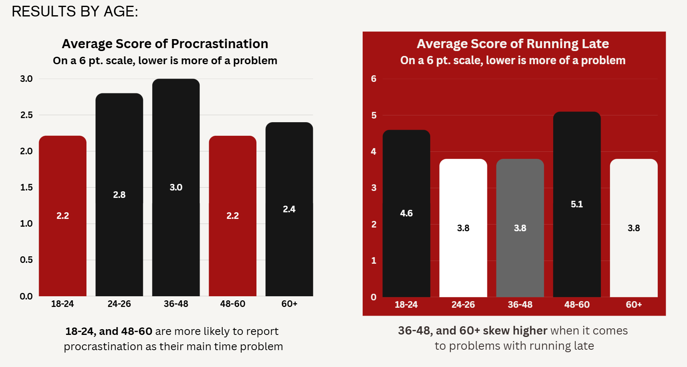
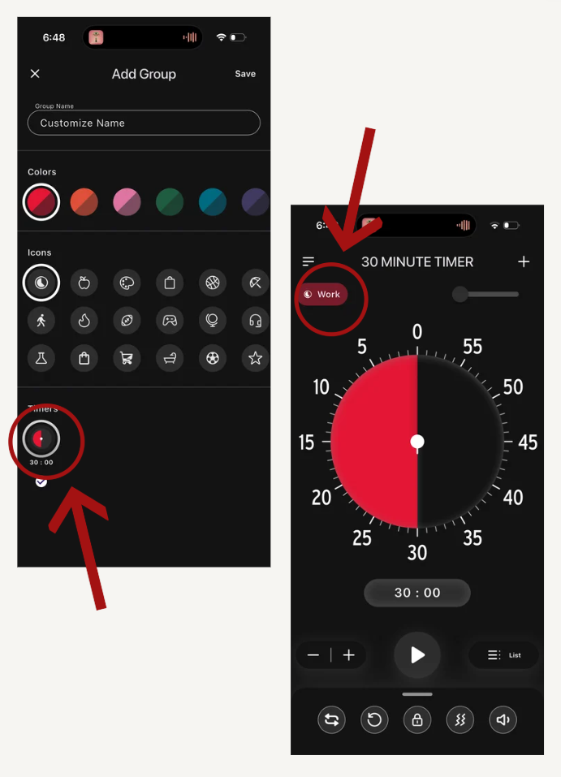
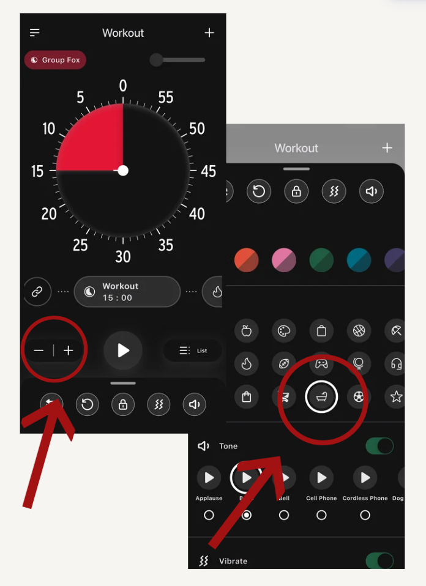

Time Timer came to the Intuix Design Agency to ask for their assistance in understanding the user experience of their app and developing recommendations for a redesign. Time Timer is a highly popular, award-winning visual timer brand trusted for over 30 years by educators, therapists, and parents to assist with time management, ADHD, and autism. The Time Timer application currently lacks a straightforward, user-friendly onboarding process. It does not provide a clear user experience (UX) or user interface (UI), nor does it offer quick-access features such as a widget. Consequently, users find it challenging to understand how to use essential features and effectively integrate the app into their daily lives. This project seeks to enhance the onboarding process, streamline the overall user experience and interface, and implement a home-screen widget to facilitate quicker access.
UX Research & Design
TimeTimer App Redesign & UX Analysis
Conducted UX research and redesigned the Time Timer app to improve onboarding, navigation, and accessibility of key features.
Overview
Time Timer is a productivity app designed to help users manage their time effectively. It features a visual timer that allows users to see how much time is left for a task, promoting better time management and focus.
For this project, our team conducted UX research on the Time Timer app to identify areas for improvement in onboarding, navigation, and accessibility of key features.
The Intuix Design Agency is a team of eight undergraduate students driven by a shared commitment to meeting problems and crafting solutions tailored to each client. By bringing together diverse perspectives and skill sets, we create thoughtful, effective, and well-rounded solutions that address real needs with clarity and purpose.
My Role
- Performed UX testing on the TimeTimer app and on our redesigns
- Redesigned the app using Figma click-through prototypes
- Presented to the client showcasing our research findings and redesign

Research Goal
Methods
We used a combination of evaluative and analytical user research methods to understand how the TimeTimer app performs. These included:
Secondary Research
Reviewed existing literature and data to understand the current state of the TimeTimer app and identify areas for improvement.
Survey
Collected feedback from users to understand their experiences, needs, and expectations with the TimeTimer app.
Competitive Analysis
Compared the TimeTimer app with competing apps to identify strengths, weaknesses, and opportunities for differentiation.
Usability Testing
Observed users interacting with the TimeTimer app to identify usability issues and areas for improvement.
Interviews
Conducted interviews with users to gather in-depth insights into their experiences, needs, and expectations with the TimeTimer app.
Meetings with Industry Experts
Consulted with industry experts to gain insights into best practices, trends, and potential improvements for the TimeTimer app.
Secondary Research
Time Blindness Difficulties
- Estimating how long an activity will take
- Problems creating or adhering to schedules
- Frequently running late or missing appointments/meetings
- Getting hyper-focused on a task and losing track of time
App Design
- Keep navigation simple and consistent
- Focus each screen on one primary user action
- Gradually introduce features to avoid overwhelming users
Widgets
- Provide constant, passive time reminders
- Reduces friction by minimizing extra step
Onboarding Design
Onboarding helps users quickly understand the app’s value. Effective onboarding can increase retention.
Key strategies:
- Keep it simple
- Use tooltips for extra guidance
- Include tutorials or interactive walkthroughs
Survey
During our early research, we noticed a pattern:
Many people struggle with perceiving and managing time effectively, even when they feel they are generally productive.
Because the TimeTimer concept focuses on visualizing time, we wanted to explore whether users felt that seeing time pass visually could improve focus and task management. We decided to do this by starting our research with a survey.
When distributing our survey, we intentionally targeted individuals with demanding and fast-paced schedules, as they are the most likely to rely on time management tools in their daily lives. Our primary participant groups included students, working professionals, and parents.
By gathering feedback from 103 people with different lifestyles and scheduling challenges, we were able to gain a broader understanding of how users manage their time and what they need from a productivity application like TimeTimer.

List Procrastination as their #1 time management problem
Are likely to try / use a digital visual timer
State that visually seeing time ticking down helps them process time
State they have experienced ‘Time Blindness’
Competitive Analysis
Tiimo
Strengths
Exceptional onboarding (Rating 9/10) with a "suggest for me" feature that reduces friction.
Weaknesses
Very high price point ($50/month for full features) and extremely limited personalization options for layout or color.

MultiTimer
Strengths
Strong history and repeating features. It allows users to view timer history via intuitive gestures (pinching/zooming).
Weaknesses
Personalization is locked behind a premium paywall; the "family-friendly" neon aesthetic might not appeal to professional users seeking a minimalist tool.

Visual Timer
Strengths
Allows for deep personalization of colors and timer styles in the free version.
Weaknesses
Suffers from poor UX (Rating 4/10) due to confusing setting names and a design that feels similar to the Time Timer.

Ultimate Focus
Strengths
Outstanding variety of unique features (Rating 10/10), offering 45+ custom presets (e.g., progress timers, days-left timers).
It uses a high-contrast dark theme (black/red/white) that makes the interface "pop."
Weaknesses
Suffers from poor UX (Rating 4/10) due to confusing setting names and a design that feels similar to the Time Timer.

By conducting a competitive analysis of Time Timer’s leading competitors, we were able to identify areas where their app could be improved and gain concrete examples of potential improvements. The analysis also highlighted the features and strengths that Time Timer already excels in, helping us better understand where to focus our research and identify opportunities for meaningful innovation.
User Interviews
We began by drafting our interview questions based on the data we gathered from the survey of the core user demographic. We then performed six one-on-one interviews with people of diverse age groups (18-57) and genders (4F/2M), gathering key insights from their responses to our open-ended questions.
Emotional Insights
- Time visually going down creates feelings of anxiety
- Mobile timers are preferred over physical timers
- Visual timers can improve feelings of accomplishment
Design Preferences
- Simple, sleek, and minimal design
- Modern palettes or very dark screens
- Calm and relaxing sound alerts
Functionality Preferences
- Showing time remaining, not time passed.
- If a task is important enough to set a timer, it should be accessible as a widget.
- Preference for lockscreen visibility (Live Activity) to reduce distractions.
From these interviews, we also wanted to focus on identifying not only the impact of app design and functionality on users, but also what drives them to purchase the premium account. This would guide us when deciding what design features are most important to the app, as those that drive the user to buy premium would be most valuable.
Observations
Freemium First
Free core experience builds trust before asking users to pay.
Vulnerability & Authenticity
Struggle and growth resonate more than highlight reels.
Accomplishment Tracking
Users want their progress visible and reflected back at them.
Credible Spokesperson
Users want their progress visible and reflected back at them.
What does this mean?
Our interview results showed that users value simplicity over an abundance of features when using a timer app. Their primary goal is to quickly create a timer, with little need for additional features or functionality. We also learned that users would rather use the timer as a widget or live activity on their screen, rather than within the app, showing a strong need for these to be created.
Usability Testing
We created five tasks for our usability testing based on real user journeys. These were meant for us to get a clear understanding of how our users complete tasks, and to find where they struggle and succeed.
Task 1: Create a Timer
Set up a 45-minute timer and then a 10-minute timer.
Task 2: 45 min → 15 min sequential timer
Assign three time blocks; 15 minutes, 30 minutes, and 15 minutes and giving them names.
Task 3: 3 Timer groups with names
Find where you can change the sound the timer makes when it ends. Then see if you can change the color of the timer display.
Task 4: Change sound and color
You want to find the tutorial again to learn how to use the app.
Task 5: Find Tutorial
You want to find the tutorial again to learn how to use the app.
Observations
Unclear connection between Timer and Group features
Tutorial does not prepare the user for the full usability of the application
Icons are in the wrong place and lack meaning
Too many menu options that do similar things
Usability Testing Results
Average number of ‘Wrong Turns’
Average number of Mediations
1: Group creation
Only 1 participant found the group tab without difficulty
Regarding the icon on the top right of the ‘Timer’ page

2: Onboarding
3: icon design & usage

4: Navigation
All 4 participants listed navigation as their least favorite part of the app
Some quotes from the UX test:
What does this mean?
These usability testing results were one of the most critical pieces of data we needed to begin the design process. We had identified the core issues users were experiencing; now, it was time to turn those insights into solutions.